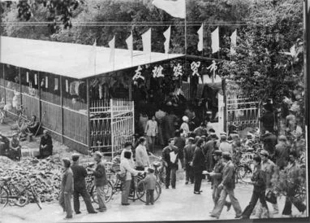
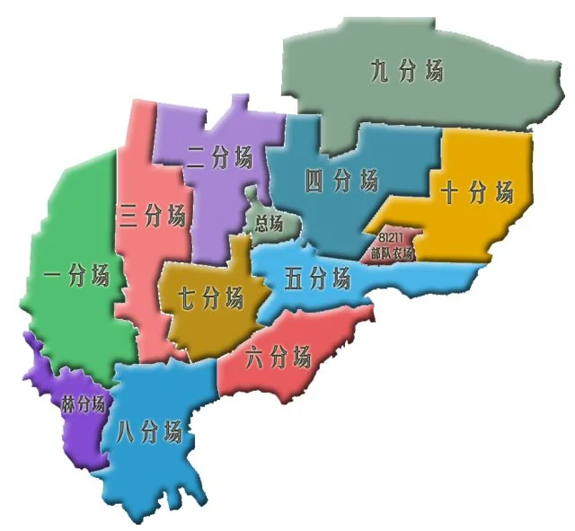

从国书到三道岗
1954年秋，赫鲁晓夫率苏联代表团来华参加新中国成立五周年庆典。10月12日，中苏双方就援建大型国营谷物农场互致国书。苏方提出提供设备、派来技术人员，中方接受援助。馆内把农场列入“一五”时期合作项目，介绍初期规划约两万公顷，并记载周恩来为农场命名。
据馆内展示的建场决定，1954年12月7日国务院确定在当时的集贤县三道岗一带建场，任命王操犁为首任场长，设立建场委员会，由农业部和黑龙江省双重领导。规划涉及小麦、大豆、玉米及畜牧业。展陈也记下周恩来对农场的期望“出经验、出人才、出粮食”。12月21日，早期场部举行建场升旗仪式。
1955年进入开荒阶段。建设者一边用到场的机具开地，一边建场部、作业队和道路等基础设施。1956年转入正式生产，田间作业之外，还要组织维修、仓储和运输。日常生产逐步从临时开荒转向按场、队组织。

福利屯站卸下的装备
展墙上，一排援助卡车装在铁路平车上，目的地是福利屯火车站。结合邻近的拖拉机和成排机具照片，可以顺着运输过程理解建场。设备运到后还要接收、组装、维修，再按生产计划配到各作业队。车站是跨境援助物资与本地建设发生联系的地方。
专家、学员与家属
按馆内展板，共有37名苏联顾问和专家来场。1954年11月先到的16人承担前期工作，另21人在哈尔滨王岗农业机械化学校参与为期三个月的司机训练，1955年2月与学员一道到场。1955年6月首批6人回国，至1956年7月累计21人回国，后续人员中有6位留到1957年底。
合照里有中苏两国工作人员和翻译，生活照里有孩子戏水。展板记有21位专家家属和22名孩子，先住在福利屯，1955年10月宿舍建成后迁入友谊。

从农场建制到县场分设
王操犁任场长的时间，展签记为1954年12月至1957年3月。此后王正林接任，至1961年2月。两人的肖像下方，展板梳理了后来县和场之间的建制变化。
1960年首次设置友谊县，初期实行县场合一。1962年撤县，1964年恢复。1968年，农场改编为黑龙江生产建设兵团第三师第十八团，生产队伍按营、连组织。友谊县在这段时期仍有自己的行政沿革，至1973年正式撤销。
1976年兵团撤销，十八团恢复友谊农场建制，归红兴隆农场管理局管理。1984年恢复友谊县，随后由佳木斯市管辖。1988年县场分设，地方行政与农业生产经营由各自机构负责。1991年友谊县划归双鸭山市。


旧分场图上的友谊农场
这张旧图标注总场、各分场和林分场，反映农场组织农业生产的分区。首页的县域图则标出县界、乡界和各级政府驻地。两张图记下的是工作范围和行政辖区在同一片土地上的不同用途。
农场还设有作业队，队名随着组织调整而变化。老资料常说的五分场二队，今天对应第五管理区第二作业站。

查阅来源
- 亲历者蒋建平谈建场 · 友谊县人民政府
- 友谊农场史话 · 友谊县人民政府
- 友谊农场建置 · 黑龙江数字方志
- 友谊县场体制改革亲历 · 友谊县人民政府
- 天下第一场，美丽友谊县 · 家乡风物志
- 友谊农场建设初期报道 · 人民日报历史版